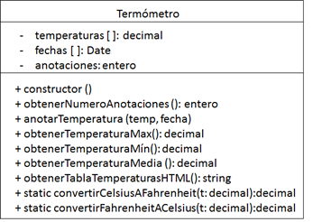

UD 1. Prueba de aplicaciones web y para dispositivos móviles
D.- Ampliación
Una vez entendidas las particularidades del framework mocha y la librería chai y comprendido el funcionamiento del código fuente proporcionado. Es el momento de proceder a la ejecución de los casos de prueba.
Crea una nueva clase Termómetro.js que permita anotar las diferentes temperaturas de un Paciente, además este componente deberá poder convertir temperaturas entre grados Celsius y Fahrenheit.

Realice la implementación de esta clase y sus correspondientes pruebas unitarias, así como las pruebas que permitan comprobar su correcta integración con la clase Paciente proporcionada.